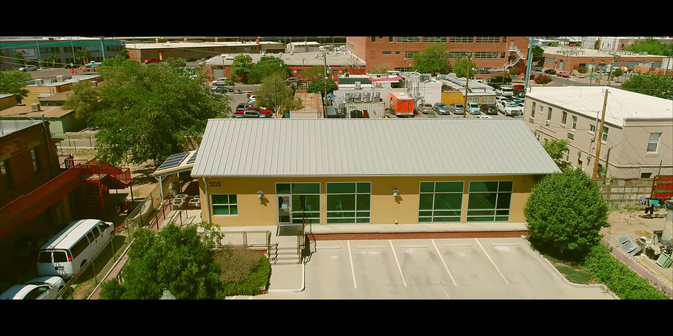

01 / Architecture Firm Portfolio
Carl Daniel Architects
Lead architectural imagery for an established AIA-connected firm whose public profile cites more than $400M in construction projects and decades of healthcare, education, civic, and commercial work.

